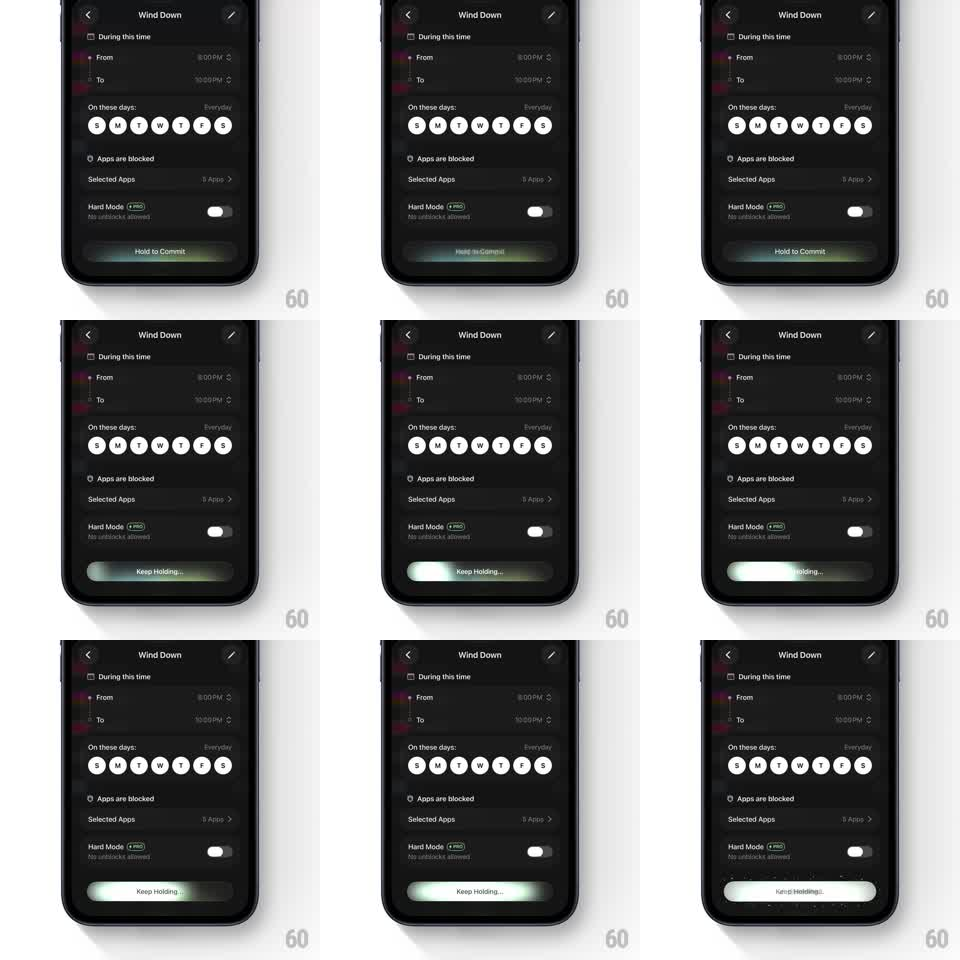

Media
Frame-by-frame

Rebuild this interaction 1:1: Opal's hold-to-commit button - the schedule screen's bottom button reads "Hold to Commit" with a slow shimmer; pressing and holding switches the label to "Keep Holding..." while a light fill sweeps across the button, and releasing early snaps the fill back.

Rebuild this interaction 1:1: Opal's hold-to-commit button - the schedule screen's bottom button reads "Hold to Commit" with a slow shimmer; pressing and holding switches the label to "Keep Holding..." while a light fill sweeps across the button, and releasing early snaps the fill back. ## Integration Integration: stack-agnostic spec - springs given as stiffness/damping, timed motions as duration + curve; map every value to your framework and animation library of choice. ## Scene Dark "Wind Down" schedule screen: time range pickers, day-of-week circles, blocked-apps row, Hard Mode toggle. Bottom: full-width commit button (dark pill with a light edge shimmer). ## Motion spec Pattern: press-and-hold confirmation, ~1.2s hold. - Idle: a shimmer band sweeps the button every 3s (translateX -100% -> 100%, 1.2s, ease-in-out) - an invitation, not a spinner. - Touch-down: label crossfades to "Keep Holding..." (150ms); the fill (light, slightly translucent) sweeps left to right across the button over ~1.2s, linear-ish with a slight ease. - Haptic-style micro tick at 50% (2px button scale dip). - Release before full: fill snaps back to 0 (200ms, ease-in) and the label returns. - Complete: fill flashes to solid (100ms), the button does a success pulse (scale 1 -> 1.03 -> 1, 250ms), label swaps to the committed state. ## Calibration - 1-1.5s hold: long enough to be deliberate, short enough to not annoy. - The snap-back on early release must feel instant - hesitation reads as lag. ## Reduced motion Hold works identically; shimmer removed, fill sweeps without gradient effects. ## Don't miss - The label change is the instruction - it must switch on touch-down, not at 50%. - The button never navigates on a plain tap; the hold IS the interaction.